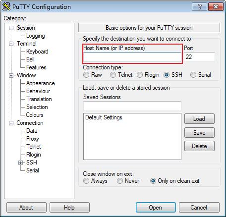
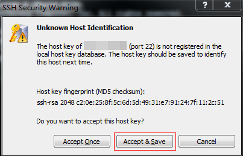

Scenarios
This section describes how to remotely log in to a Linux ECS using an SSH key pair from Windows and Linux, respectively.
Prerequisites
- You have obtained the private key file used for creating the ECS. For details about how to create a key pair, see (Recommended) Creating a Key Pair on the Management Console.
- You have bound an EIP to the ECS. For details, see Viewing Details About an ECS.
- You have configured the inbound rules of the security group. For details, see Configuring Security Group Rules.
- The network connection between the login tool (PuTTY) and the target ECS is normal. For example, the default port 22 is not blocked by the firewall.
Logging In to the Linux ECS from Local Windows
To log in to the Linux ECS from local Windows, perform the operations described in this section.
Method 1: Use PuTTY to log in to the ECS.
- Check whether the private key file has been converted to .ppk format.
- Visit the following website and download PuTTY and PuTTYgen:
https://www.chiark.greenend.org.uk/~sgtatham/putty/latest.html

PuTTYgen is a key generator, which is used to create a key pair that consists of a public key and a private key for PuTTY.
- Run PuTTYgen.
- In the Actions pane, click Load and import the private key file that you stored during ECS creation.
Ensure that the format of All files (*.*) is selected.
- Click Save private key.
- Save the converted private key, for example, kp-123.ppk, to the local computer.
- Double-click PUTTY.EXE. The PuTTY Configuration page is displayed.
- Choose Session and enter the EIP of the ECS under Host Name (or IP address).Figure 1 Configuring the EIP
 - Choose Connection > Data. Enter the image username in Auto-login username.
- If a public image is used, see Public Images Introduction for the image username.
- If a private image is used, use the username of the private image.
- Choose Connection > SSH > Auth. In the last configuration item Private key file for authentication, click Browse and select the private key converted in step 6.
- Click Open.
Log in to the ECS.
Method 2: Use Xshell to log in to the ECS.
- Start the Xshell tool.
- Run the following command using the EIP to remotely log in to the ECS through SSH:
ssh Username@EIP
- If a public image is used, see Public Images Introduction for the image username.
- If a private image is used, use the username of the private image.
- (Optional) If the system displays the SSH Security Warning dialog box, click Accept & Save.Figure 2 SSH Security Warning
 - Select Public Key and click Browse beside the user key text box.
- In the user key dialog box, click Import.
- Select the locally stored key file and click Open.
- Click OK to log in to the ECS.
Logging In to the Linux ECS from Local Linux
- On the Linux CLI, run the following command to change operation permissions:
In the preceding command, path refers to the path where the key file is saved.
- Run the following command to log in to the ECS:
ssh -i /path/kp-123.pem Default username@EIP
For example, if the default username is root and the EIP is 123.123.123.123, run the following command:
ssh -i /path/kp-123.pem root@123.123.123.123
In the preceding command:
- path refers to the path under which the key file is stored.
- EIP is the EIP bound to the ECS.